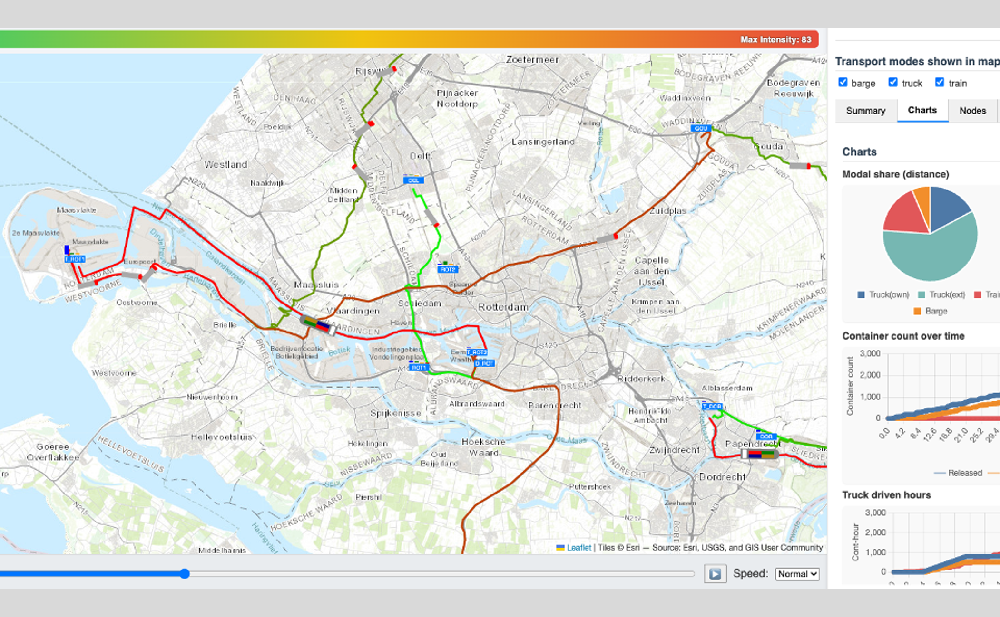
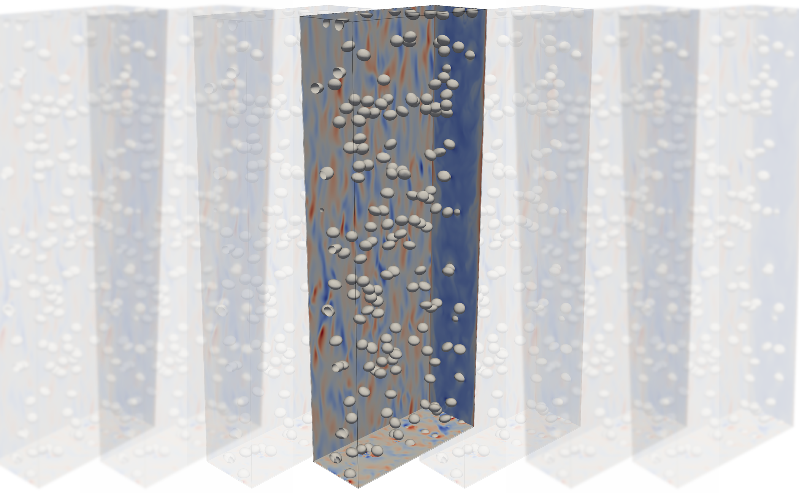

🔜 Upcoming Event 📌
16-04-2026 | 16:00 - 17:00 | Lecture Hall D
PostDoc presentations
Javier Duran Micco and Jordi Poblador Ibáñez
16-04-2026 - Lecture Hall D
PostDoc presentation

Tactical planning for intermodal freight transport: optimization using Graph Neural Networks
Javier Duran Micco
Logistic Service Providers (LSPs) operate in complex and highly dynamic transport systems, where decisions are influenced by uncertainty, interactions with multiple stakeholders, and large-scale networks. Supporting effective planning and adaptability in such environments remains a key challenge, so efficient optimization algorithms are needed. This research focuses on the Service Network Design (SND) problem faced by an LSP, integrating tactical planning with dynamic operational decisions. The proposed approach considers a complex operational setting, including uncertain travel times and demand, dynamic replanning decisions, and interactions between the LSP and carriers. An agent-based simulation model is developed to capture these complexities and is coupled with a metaheuristic to solve the SND. To overcome the high computational cost of simulation, a Graph Neural Network (GNN) is introduced as a surrogate model. The GNN, trained with simulation-generated data, leverages the network structure to predict both global performance (profit) and node-level indicators, which are used to guide the search process. Numerical experiments show that the proposed framework produces high-quality solutions with scalable computational effort, particularly for large-scale instances. The results highlight the potential of integrating optimization and machine learning to address complex freight transport planning.
16-04-2026 - Lecture Hall D
PostDoc presentation

Rethinking the modelling of under-resolved scales in simulations of bubbly flows
Jordi Poblador Ibáñez
Bubbly flows are central to the energy transition. Simulations are crucial to understand their behaviour and develop new technologies. However, the large amount of bubbles found in many systems and the small scales and physics that must be resolved limits the scope of current studies. This research project rethinks the state-of-the-art and proposes more accurate sub-grid models for bubble heat transfer and coalescence to bridge the scale gap and allow the study of complex multiphase systems. Therefore, taking a step further to enabling new insights of bubbly flow systems relevant to society’s engineering needs.
The M&TT Colloquia is a colloquium series that is organized within the department of Maritime and Transport Technology at Delft University of Technology. The organization is done by PhD students from this department.